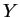
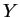
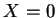
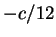
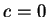
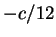
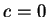
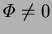
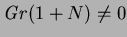

A more general solution that still satisfies equations
(4.13)-(4.17)
and boundary conditions (4.18)-(4.21)
is one where  varies
with , but this must be rejected on physical grounds as it leads to
a net vertical mass flux that varies with height. This violates the
conservation of mass, as by equation (4.39)
the cold and hot wall Sherwood numbers are equal, so that
there is no net addition of mass to the cavity
through the hot and cold walls at any horizontal section for which this fully
developed solution applies.
varies
with , but this must be rejected on physical grounds as it leads to
a net vertical mass flux that varies with height. This violates the
conservation of mass, as by equation (4.39)
the cold and hot wall Sherwood numbers are equal, so that
there is no net addition of mass to the cavity
through the hot and cold walls at any horizontal section for which this fully
developed solution applies.
The value of the constant  remains indeterminate. It is clearly
related to the net vertical mass flux, which is proportional to the
integral of
remains indeterminate. It is clearly
related to the net vertical mass flux, which is proportional to the
integral of  across the cavity. This integral depends
on
across the cavity. This integral depends
on  .
.
In the small mass transfer rate factor limit, the integral from 
to 1 of  (4.36) is . For the cavity,
the net vertical mass flux in this limiting case must be zero
(assuming3 there is no mass flux at the floor or ceiling, or front or
back walls) so that . For an open channel,
(4.36) is . For the cavity,
the net vertical mass flux in this limiting case must be zero
(assuming3 there is no mass flux at the floor or ceiling, or front or
back walls) so that . For an open channel,  is determined by
the pressure boundary conditions at the inlet and outlet.
is determined by
the pressure boundary conditions at the inlet and outlet.
No such simple treatment is possible for a cavity with . An inspection of figures 4.2 or 4.3, for which in all the plotted profiles, reveals that the condition of the pressure gradient balancing the mean density perturbation (i.e. , from equation 4.28); does not imply a net zero vertical mass flux. Further, if , a recirculating flow would be expected, which would certainly cause the net mass added to the cavity through the hot and cold walls to be different in the top and bottom end regions. This difference cannot be determined without the solutions valid for these regions. These are obtained numerically in chapter 5.